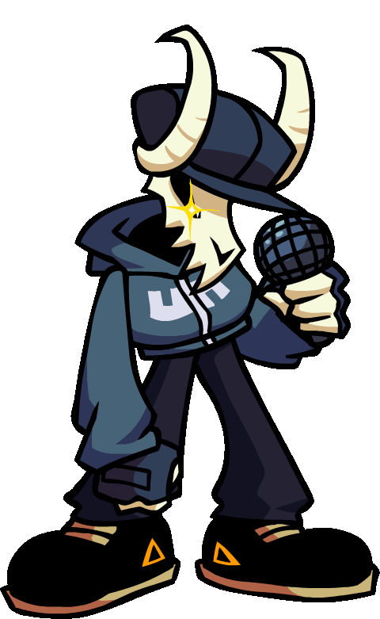
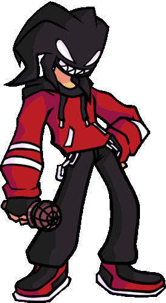
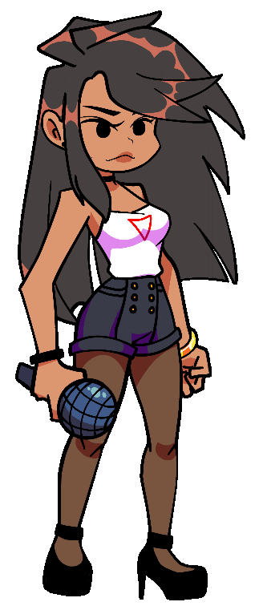

Friday Night Funkin: Tabi
Info extraida "Tabi: Why you don't understand that she is just using you?"
General
Tabi es un personaje de FNF con el cual nos enfrentamos en su Mod, es un humano con un craneo de cabra en la cabeza
Mod descargableCaracteristicas
| Especie: | Humano |
|---|---|
| Genero: | Masculino |
| Sexualidad: | Bisexual |
| Edad: | 21 |
| Fecha/Lugar de Nacimiento: | 30 de Mayo, Rusia |
| Altura: | 182 cm |
| Peso: | 78Kg |
Relaciones
 A.G.O.T.I. (Mejor Amigo)  Ayana (Amiga) Girlfriend (Ex Novia) Daddy Dearest (Enemigo)
Daddy Dearest (Enemigo)
Historia
Un año antes Tabi era un humano comun y corriente como todos nosotros, era un rapero experimentado. Todo iba bien hasta que el sintio que DD y GF estaban usandolo para su propio beneficio. Tiempo despues Tabi fue secuestrado (El secestro fue planeado por DD), lo llevaron a un lugar en el cual le pusieron una maldicion, haciendo que casi todo su cuerpo se vuelva invisible, dejando visible solo sus manos esqueleticas y su cabeza, reemplazada por un craneo de cabra.
- A Tabi le agradan los gatos (El tenia un gato, el cual fue asesinado por los secuestradores).
- Luego de lo sucedido se convirtio en alguien muy desconfiado, haciendo muy dificil lograr entablar una relacion con el.
- Cuando se enoja su mandibula deja de ser invisible
Un año despues Tabi se reencontro con GF (Ahora ella saliendo con Boyfriend) en un restaurante, el cual era el favorito de GF. Con un solo objetivo, asesinar a GF para vengarse de DD.
- Tenia planeado explotar una bomba que puso en dicho restaurante, cosa que no salio tan bien como el esperaba
- Tabi no iba a dejar que nadie se interponga en su camino, aunque eso implique asesinarlo, cosa que le remarco en muchas ocasiones a BF

"Tabi: My trust... My feelings... My love... And My heart. . . I Lost Everything"